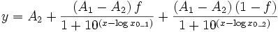

Contents |

Two site competition.
Number: 5
Names: A1, A2, log(x0_1), log(x0_2), f
Meanings: A1 = top asymptote, A2 = bottom asymptote, log(x0_1) = first center, log(x0_2) = second center, f = fraction
Lower Bounds: none
Upper Bounds: none
nlf_competition2(x,A1,A2,LOGx0_1,LOGx0_2,f)
FITFUNC\COMP2.FDF
Pharmacology